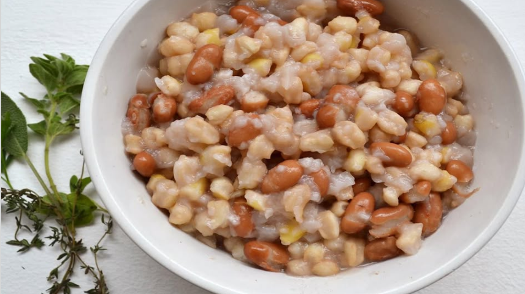
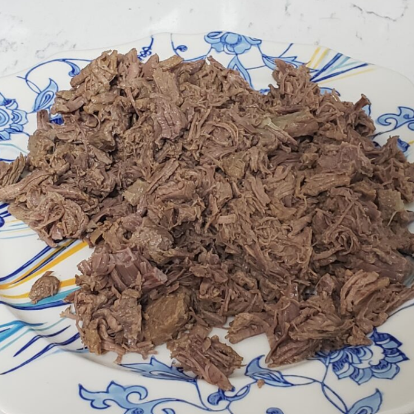
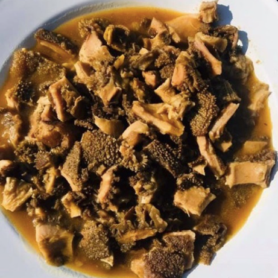
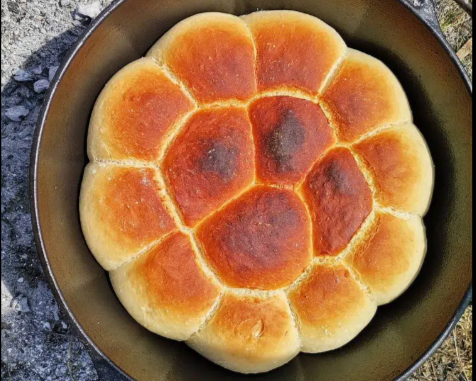
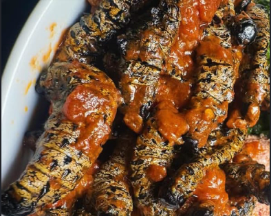

Beans
A hearty staple often paired with maize porridge — simple and filling.
Where to try
Local markets and family-run restaurants.
Discover africa's Traditional favourites.

A hearty staple often paired with maize porridge — simple and filling.
Local markets and family-run restaurants.

Slow-cooked shredded beef, often served at celebrations.
Serve with warm bread or maize meal.

Slow stewed for flavour — a favourite comfort food.
Often prepared with peppers and traditional spices.

Phaphata is a soft, round flatbread made from flour, water, and oil, popular in Botswana and other African countries.
Local markets and family-run restaurants.

Tswana chicken is a traditional Botswana dish made from free-range chicken, slowly cooked for rich natural flavor.
Best served with warm bread or maize meal.

Phane worm is usually boiled, dried, then fried or cooked in tomato and onion stew before eating.
Best served hot with pap (bogobe), rice, or vegetables.